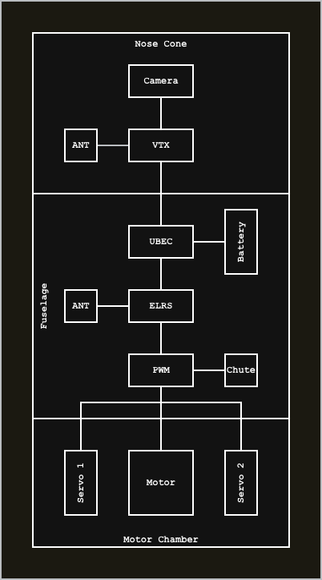

Camera & VTX
The nose cone contains the camera, VTX, and the diagram's upper antenna connection.
 Eagle RocketryCal State LA
Eagle RocketryCal State LA
Solid propulsion Vehicle control
The team diagram connects onboard video, radio, power, recovery, and PWM control to a motor chamber with two servos around the solid motor.
01 Vehicle architecture
The supplied block diagram is intentionally simple: most of the solid vehicle's complexity is in the mechanical design. This page keeps the documented electrical and control relationships easy to inspect.
Interactive diagram Solid vehicle
The motor chamber shows one servo on either side of the motor.

Use the controls or mouse wheel to zoom. Drag the diagram while zoomed.
The nose cone contains the camera, VTX, and the diagram's upper antenna connection.
The fuselage connects the UBEC, battery, ELRS, PWM, second antenna, and chute.
PWM connects to Servo 1, the motor, and Servo 2 inside the motor chamber.
Mechanical reference BPS.Space
The team is studying a BPS.Space R2-74 two-axis gimbal as a mechanical reference. Because the STL and instruction package is sold by BPS.Space, this public page links visitors to the official source instead of offering copied downloads.
Visit official BPS.Space pageInteractive model reservedThis space will use an approved, team-owned rocket or gimbal CAD export.
Continue exploring Liquid propulsion